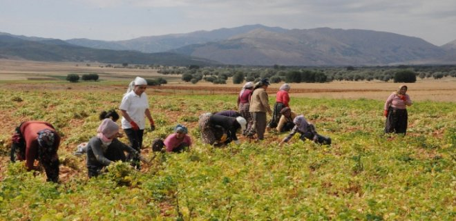

Tunceli ekonomisi tarıma ve hayvancılığa dayanır. Faal nüfusun % 80’i tarım ve hayvancılıkla uğraşır.
Tarım
Tunceli ilinde en çok yetişen tarım ürünü buğday olmasına rağmen miktarı azdır. Ayrıca, arpa, şekerpancarı, fasulye, soğan ve az miktarda pamuk ve iyi cins kokulu tütün yetiştirilir. Güney kısmında vadilerde sebze ve meyve yetiştirilir. Başlıca meyveleri ceviz, dut ve bademdir. Tarıma müsait arazi Keban Barajı altında kalmıştır.
Hayvancılık
Tunceli’de hayvancılık halkın temel geçim kaynağını teşkil eder. Besi hayvancılığı gelişmemiştir. Mer’a hayvancılığı yapılır. Sığır, koyun ve kıl keçisi beslenir. Arıcılık gelişmiştir.
Ormancılık: Tunceli ilinde 210 bin hektar orman ve 50 bin hektar fundalık saha bulunmaktadır. Orman içinde 219 köy ve kenarında 69 köy yer alır. Bu ormanlardan yılda yaklaşık 420 bin ster (315 m3) yakacak odun elde edilir.
Madencilik
Tunceli ili maden bakımından zengin olmasına rağmen iklim şartları ve ulaşım güçlüğü sebebiyle sadece tuz elde edilir. Tuz istihsaliyse, tuzlu sulu kuyulardan.